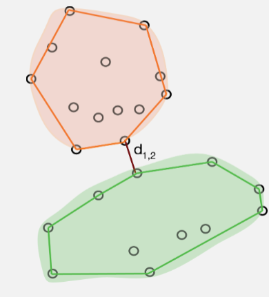
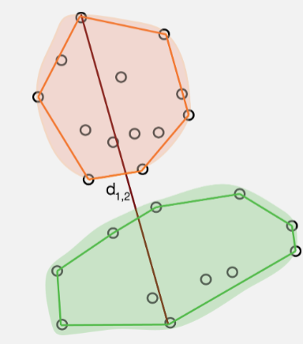
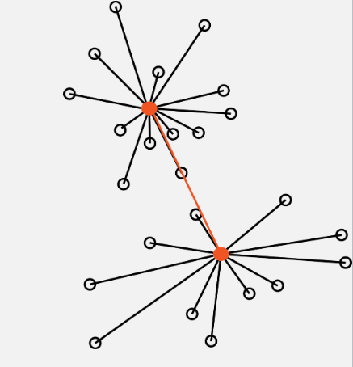

Clustering
So, it’s all about variation again! And the idea of minimizing it.
Cluster analysis, or classification as it is known in the botanical literature, has the apparently simple aim of finding clusters in a data cloud of sampling units in the absence of any a priori information about which point belongs in which cluster. This apparently unambitious aim is unfortunately fraught with problems. The major difficulty is that no one seems to agree on precisely what a cluster is. For a very good reason, the human eye is unexcelled as a pattern recognition device, but we recognise clusters of points in a variety of different ways. For example, it is extremely difficult to think of a single definition that would adequately describe all the clusters in fig 7.1, even though they are quite obvious (I hope). Some workers have stressed the importance of cohesiveness (like fig 7.1a); others contiguity of points (7.1b); yet others have concentrated on distances such that all or most of the distances within a cluster are less than those to any point outside the cluster; and finally others have tried to make the definition so vague that it can include most of the possibilities without the necessity of actually defining anything. Everitt’s definition (Everitt 1980) seems to come as close to being useful as any: “Clusters may be described as continuous regions of (a) space containing a relatively high density of points, separated from other such regions by regions containing a relatively low density of points.” Unfortunately it does not provide a rationale for a single comprehensive technique that can handle all the data structures shown and satisfy all the requirements of workers. Indeed it is extremely unlikely that any such method could ever be found, for there lies another problem, workers want the technique(s) for a number of different purposes: i) to find groups for classification; ii) to reduce the number of sampling units in an analysis by using a single representative from each cluster of similar individuals; iii) for data exploration and hypothesis generation; iv) for fitting distribution models and estimating their parameters; v) dissecting a continuous data cloud into relatively homogeneous zones; and many more. The only thing the large number of existing techniques have in common is that unlike canonical discriminant analysis (section 10) and discriminant function analysis (not covered in this course) there is no prior information about which sampling unit is in which group. Like the ordination methods of the earlier chapters, cluster analysis techniques operate on an unpartitioned data matrix to find, or impose, structure in the data cloud. One consequence of this variation in definition and use is that cluster analysis as such does not exist. The title refers to an enormous and extraordinarily diverse family of techniques. For someone to say that they used cluster analysis is about as informative as their saying they studied an insect. To cover all the techniques would take a whole (large) book. So for this course I shall content myself with covering some of the common ones and ones I think are potentially most useful. Given the diversity of techniques it is very important to choose the technique with a clear idea of what it is required to do. Like selecting a similarity or distance metric (Section 4), the choice must be made with care after consideration of the nature of the data, your objectives, and the available alternatives. However the most important thing to remember when using a clustering technique is:- you must not believe the result. The pattern you get is at most a plausible way of viewing the data. By using an appropriate method and by employing validation techniques the plausibility can be enhanced, but no cluster analysis can be relied on to produce truth. With real data, different methods will nearly always produce different results. If the structure in the data is fairly obvious then these answers may not differ much, but if there is any ambiguity in the data then the methods may well give contradictory results.
Partitioning methods.
Though the hierarchical methods have been historically more important, the partitioning methods are becoming increasingly popular, and it is easy to see why. The hierarchical methods are restricted to an often inappropriate nested structure so that at each level (number of clusters) the solution is constrained by the previous one. In the partitioning or segmentation methods the solution at any level is independent of the others and can therefore be globally optimal - if you’re lucky. For a single run of a partitioning method, the desired number of clusters ( k ) is usually fixed - some techniques do allow some small adjustment in this number during the process. Of course since the correct number of clusters is usually not known, the program is normally run with different values of k and the optimum number of clusters chosen (covered later). There are two major phases to a partitioning method: i) an initial allocation (usually rather arbitrary) into k preliminary clusters; ii) reallocation of each point either to the closest centroid, or so as to optimise some property of the clusters. This is repeated until there is no further improvement, then the program stops. The initial allocation is usually started by choosing k sampling units to use as “seeds” to “crystallise” the clusters. There are a number of ways to choose these seeds; it depends on the program. As we shall see it is a tremendous advantage if you can put in your own set. These seeds are used as the initial centres of the clusters, points are allocated to the nearest cluster centre, and in most programs the cluster centroid is adjusted as they are added. The methods we consider here (there are others) the k -means methods, run through the sampling units reallocating them to the cluster with the closest centroid; they pass and repass through the data till no further reallocation of points is possible. Some programs then try swapping pairs of points between clusters, to further improve the solution, and to protect against local optima.
K-means partitioning methods
The k -means methods are generally the fastest clustering methods, but they are inclined to be trapped by local optima and tend to produce equal volume spherical solutions. They are also very ensitive to starting strategy. Some workers suggest that random starting values should not be used. Seber reports a study as having located the global optimum only 3 times from 24 random starts! However their performance in the few Monte Carlo simulation studies that have incorporated them has been good relative to alternative methods, particularly when the solution from a hierarchical method was used as the starting configuration. In fact, it has tended to be better than the best hierarchical methods considered (Ward’s and average linkage). If the data set is particularly large, a sub-sample of the points could be clustered and the estimated centroids of the resulting clusters used as seeds for the analysis of the full data set. Some programs allow you to vary how the distance to the centroid is measured. Some programs normally use the squared distance which means that it is minimising the trace( W ) where W is the within cluster variance-covariance matrix pooled over all the clusters, i.e. the total within sample variance. This is an appealingly statistical thing to optimise.
Hierarchical methods.
These methods assume that the groupings in the data cloud have a hierarchical structure. The smaller groups form larger groups which form larger groups and so on - a nested classification. If this assumption is untrue then the techniques can be expected to distort the true structure of the data. Most of the commonly used techniques are members of this group. They are widely available, all the major packages have a selection, and they are relatively easy to use, though often less so to interpret. Hierarchical organisation is often difficult to justify for real data sets. Though there may be more than one level of grouping there may be no reason to assume that they are nested. For example, it has been shown that the clusterings defined by the optimum sum of squares at various levels of k may not be nested for all data sets; so a hierarchical method may be unsuitable for any given data set. There are two approaches to hierarchical clustering, agglomerative and divisive . Agglomerative methods start from the individual sampling units forming them into groups and fusing the groups till there is only one that includes all the points. If we can describe this as working from the bottom up, then the divisive techniques work from the top down. The groups are formed by splitting the data set successively until there are as many groups as points.
Hierarchical agglomerative clustering.
All of the commonly used hierarchical methods are agglomerative. Most of them operate in the same way: first all sampling units that are zero distance apart are fused into clusters. The threshold for fusion is then raised from zero until two clusters (they may be individual points) are found that are close enough to fuse. The threshold is raised, fusing the clusters as their distance apart is reached until all the clusters have been fused into one big one. Thus the close clusters are fused first, then those further apart, till all have been fused. This process allows the history of the fusions, the hierarchy, to be displayed as a dendrogram. This is an advantage of the agglomerative methods, if the data have a nested structure these techniques lead to a useful way of displaying it. Other advantages are the ready availability of programs and their ability to handle quite large data sets - at reasonable expense. Unlike the optimisation or k -means methods, most of the agglomerative techniques can use a broad range of similarity or distance measures. This of course means that considerable care must be taken to choose the appropriate one; different measures often lead to different results. Inevitably, given the variety of definitions of a cluster, there are a large number of different hierarchical agglomerative techniques. They mainly differ in the details of the fusion rule. For most of them the rule is simply stated: two clusters should be fused if the distance between them has been reached by the threshold. The problem is to estimate that distance. It can be done in a variety of ways and will usually affect the results. As we shall see, different types of clusters need different ways of estimating intercluster distance. We shall consider the four most commonly used methods.
Single linkage (nearest neighbour) clustering.
Single Linkage (nearest neighbour/minimal jump): Computes the distance between clusters as the smallest distance between any two points in the two clusters

The distance between two clusters is the distance between their nearest points (Figure 7.3a).The simplicity of this method makes it easy to program and extremely efficient. It was one of the most popular techniques in the early days of clustering; but since then, despite support from the theoreticians, it has been used less frequently. In general it has not performed well. It identifies clusters on the basis of isolation, how far apart they are at their closest points. This means that if there are any intermediate points then single linkage will fuse the groups without leaving any trace of their separate identities. This is called “chaining”, which leads to characteristic and rather uninformative dendrograms. It is the chief weakness of the method. Its strength is that if the clusters are well separated in the data, then single linkage can handle groups of different shapes and sizes, even long thin straggly ones (e.g. Figure 7.1c) that other methods often cannot recover. It has other advantages, it will give the same clustering after any monotonic transformation of the distance measure - that means that it is fairly robust to the choice of measure. It is insensitive to tied distances - some methods suffer from indeterminacy if there are too many ties; a bit like degenerate solutions in non-metric MDS, (section 6.3.3.iii) and though the results are seldom as pretty, they can be just as meaningless. As a cluster analysis single linkage is usually not very useful (unless the data is of the right type). Many investigations have found it performs badly with even slightly messy data.
Complete linkage (farthest neighbour) clustering.
- Complete Linkage (maximum jump): Calculates the maximum distance betweentwo points from each cluster

In many respects complete linkage clustering is the opposite of single linkage. Instead of measuring the distance between two clusters as that between their two nearest members; it uses that between the two farthest members (Figure 7.3b). In consequence the resulting clusters are compact, spherical and well defined. Unlike single linkage it can be sensitive to tied distances. There are similarities, the clustering it gives is also invariant under monotonic transformation of the distances; it is robust to a certain amount of measurement error and choice of distance. Unfortunately it is sensitive to even a single change in the rank order of the distances in the dissimilarity matrix (Seber 1984), and does not cope well with outliers. However, in Monte Carlo simulations, it nearly always performed better than single linkage; though usually not quite as well as Ward’s or group average.
Group average linkage (UPGMA)
This is probably the most popular hierarchical clustering method - for a very good reason - it usually works well. It could be thought of as an attempt to avoid the extremes of the single and complete linkage methods. The distance between two clusters is the average of the distances between the members of the two groups (Figure 7.3c). If the distances are Euclidean this is the distance between the centroids plus the within group scatter. As a result this method tends to produce compact spherical clusters. Like its main rival Ward’s method, average linkage has generally performed well in Monte Carlo simulations, and its continued popularity is because it consistently, though not inevitably, gives adequate results. However, Ward’s generally performed better, particularly when there was some overlap between the groups. When intermediate points and outliers were removed (“trimming” or “incomplete coverage”), group average’s performance was considerably improved. It performed poorly with mixtures of multivariate normal distributions probably because of the overlap between clusters..
Ward’s method (incremental sums of squares, minimum variance, agglomerative sums of squares).
Ward’s method: where the goal is to minimize the variance within clusters

Ward’s method is the hierarchical version of the k-means partitioning method. At each fusion it attempts to minimise the increase in total sum of squared distances within the clusters. This is equivalent to minimising the sum of squared within cluster deviations from the centroids - i.e. trace( W ). Since at any one stage it can only fuse those clusters already in existence - it is not allowed to reallocate points - it can only be stepwise optimal. It cannot find the true minimum configuration at each level, so it would not be expected to recover natural clusters as well as the non-hierarchical methods that also minimise trace( W ). A bad start to the agglomeration process can place the algorithm on a path from which it can never reach the global optimum for a given number of clusters. Despite this, Ward’s method has performed well in simulations; one of the two best hierarchical methods overall. Its chief flaw is a tendency to form clusters of equal size, regardless of the true number. So when the number of points in the clusters are different, group average and complete link may give better results. Like the complete linkage and group average methods it is also biased towards forming spherical clusters; though perhaps not as strongly as they are. It may also be rather sensitive to outliers. However it appears to perform well when there is a lot of overlap, when many of the other techniques have difficulties. It has been found in simulations that Ward’s performed best of the hierarchical methods at recovering natural clusters, but that the k - means and optimising methods were better.